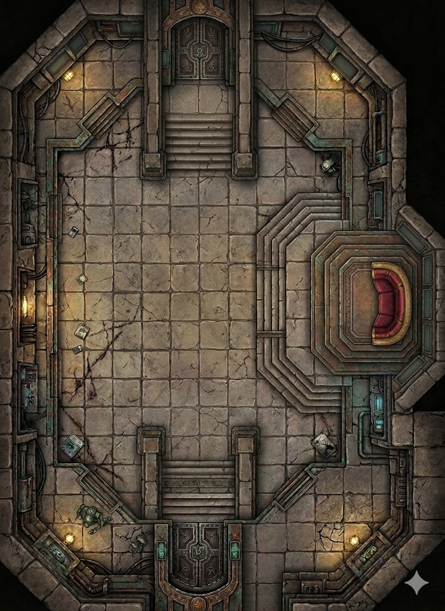

The audience chamber at the heart of the fortress — where Varga held court, received delegations, and dispensed justice (such as it was). Now empty. The Hutt fled hours ago, his hover-sled carrying him to the hangar and away. The throne still holds the impression of his body. The court is gone. The klaxons are screaming. And standing between you and the exit is the one person who didn't run.
The main floor — wide, open, cracked stone tiles. Room to fight, room to maneuver. Dropped objects from the evacuation. Support columns at the edges provide partial cover. The acoustics carry every sound. Red lockdown lighting pulses from the baseboards.
Elevated octagonal platform on the right side of the chamber — concentric steps rising to the empty crimson throne. High ground with sight lines across the entire room. Each step wide enough to fight on. Control interfaces in the throne's armrests, all dark. Varga's musk soaked into the fabric.
A wide open staircase at the south center of the chamber — not concealed, not secret. This is where the heroes emerge from the dungeon level below. Wide enough for three abreast. Cold air rises from the detention block. The bottom is visible from the top of the stairs.
The main entrance at the north — sealed by lockdown. Massive ornate doors with hydraulic assists, currently locked. Stairs descend into the chamber from the threshold. The exit the heroes need, if they can get through Demos and crack the blast door.
Narrow gallery along the northwest wall. Shelving with displayed weapons, a cold brazier, cracked stone. Room for one person — a flanking route, but tight. The displayed weapons are decorative but usable in desperation.
Top-right corner — security panels, fortress monitoring equipment, one active feed showing the hangar bay. A maintenance hatch in the floor accesses tunnels below. Blue indicator lights against the ambient amber. A flanking route or secondary escape.
Bottom-left corner — deactivated protocol droid, crates with magnetic-locked containers, a console terminal showing a diagnostic loop. Amber sconces. A step down from the main floor, easy to miss in the red lockdown light. Service corridor entrance sealed by blast door.
Bottom-right corner — blue-lit status panels showing fortress subsystem readouts. Half-empty weapons rack (stun baton, synthrope, empty holsters). Shattered decorative statue on the floor, fragments scattered. Boot prints in dried mud. Cover or a dead end depending on which way the fight goes.
Klaxons screaming through the stone — a rising, falling wail that echoes off every wall. The hum of sealed blast doors under pressure. Demos's vibro-staff buzzing at combat frequency. The Trandoshans' clawed feet scraping on stone tile. Every footstep, every word, every breath amplified by the chamber's acoustics. The lockdown strips click with each pulse.
Red emergency strips pulsing along every baseboard — rhythmic crimson washes across cracked stone. Amber sconces still burning on the walls, their warm light fighting the red. The dais is a pool of deeper shadow where the crimson throne absorbs the light. Blue indicator panels in the east alcove and southeast corner. The grand doors' lockdown strips glow solid red.
Varga's cloying musk — still heavy in the air near the throne, soaked into the crimson fabric. Smoke from extinguished braziers. Stale recycled air from emergency ventilation. The metallic tang of Demos's vibro-staff ozone. Sweat from the Trandoshans. From below, the mineral damp of the dungeons drifting up through the open passage.
Warm and stale — the environmental systems are on emergency, recycling without refreshing. Cooler near the dungeon stairway where cold air rises from the detention block below. The stone walls hold residual warmth from the court session hours ago. Near the grand doors, the sealed blast door radiates cold from the corridor beyond. The dais platform is slightly warmer — Varga's repulsor systems still running on standby, generating ambient heat.